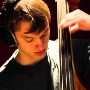

About

Allow me to properly introduce myself:
My name is Paul Batchelor. I grew up in Newton Massachusetts, but home for me was wherever my bass went. Under the guidance of my teacher Pascale Delache-Feldman, my bass and I found home in countless concert halls, stages, clubs, and festivals. The nature of the bass (both upright and electric) allowed me to play many styles of music, and therefore allowed me to play for many styles of people. It was this kind of accessibility attached with the instrument that made playing very rewarding to me.
In 2014, I graduated from the Berklee College of Music with a degree in Electronic Production and Design. It was at Berklee that I learned about synthesis techniques, digital signal processing, and avant-garde computer music composition. While my weapon of choices has shifted from bass to computers, the excitement of accessibility remains the same in the kind of music I like to create.
You can also download an offline version of my resume: PDF